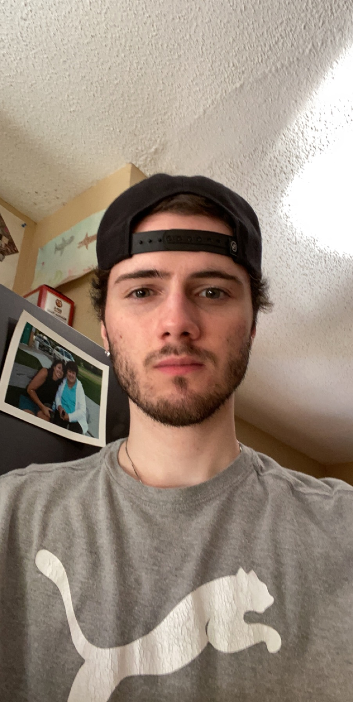

Hello, my name is Thomas Hoerger and I am a computer science student at North Hennpin. On this website, you will find information and resources on basketball, computers, video games, and exercises. Each page contains useful information on each topic. I hope this website will turn out to be a informative resource for you.
My Hobbies
Basketball
Computers
Video games
Exercise

Me
My Goals
Graduate with a bachelors in computer science.
Find a good paying job involving computers in some way.
Gain muscle and continue to consistently workout
Learn to code in C and continue to get better at other coding languages.
Get my own place to stay eventually my own house.
Why I Created This Website
I created this website to share my knowledge and experiences with others who are interested in the same hobbies. I hope that this website will inform others about basketball stats, computers, video games, and exercises